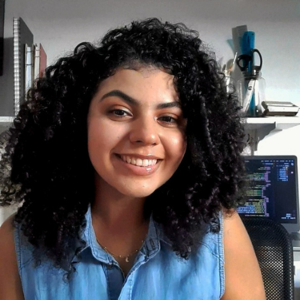

Júlia Guilhermino
Aluna do 3º ano do curso técnico de informática do IFRN.
Top 3 sagas favoritas são: Percy Jackson e os Olimpianos, Outlander e Cemitério dos Livros Esquecidos (as três estão no topo).
Leia qualquer coisa que a chamar a anteção de alguma forma, mas se não gostar também não força a barra e parte pra próxima história.

Cauã Dantas
Aluno do 3º ano do curso técnico de informática do IFRN.
Meus top 3 livros favoritos: A casa de Hades, It- A coisa e O exorcista (livros sombrios sempre no meu pódio)
Sinta uma imersão nos livros, abrace as histórias, ame os personagens e assim seja um verdadeiro.